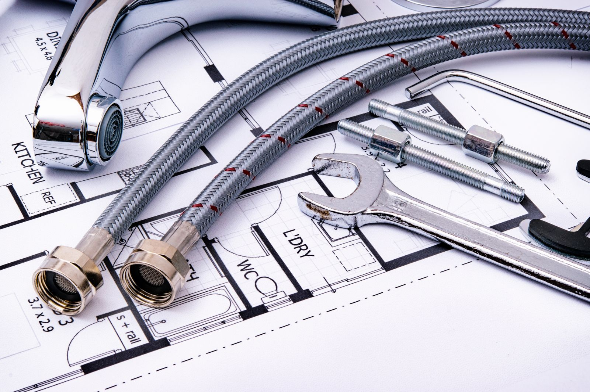

Craftspeople, not quick fixers.
Michael New runs the shop on West Magnolia Street. Below is his own statement, in full, as he wrote it.
Michael New
New's Handyman Service, LLC
August 5, 2026
#Craftsmanship
#HomeImprovement
#TrustedPros
There is a big difference between fixing something just enough to get by and doing it right. At New's Handyman Service, we don't just see ourselves as quick fixers: we are craftspeople who take immense pride in every detail of our work.
Whether it is custom carpentry, intricate trim work, or complex home repairs, we approach every project with the dedication, skill, and care your home deserves.
When you invite us into your space, you can trust that reliability and exceptional craftsmanship come standard. Let us bring lasting quality to your next project!
One word
The word customers reach for most often is not "cheap" or "fast". It is "honest".
A statement of values is easy to write. What makes this one worth reading is that thirty-four independent reviews describe the same behaviour — answered immediately, seen the next day, fair price, done properly, and usually one extra thing fixed that nobody asked about.

| You reach Noe | Not an office, not a queue. Call or text, 24 hours a day — reviewers consistently describe an immediate reply. |
|---|---|
| Seen quickly | A date set for the next day is the common pattern, and same-day when the job will not keep. |
| A fair price first | Quoted before the work starts. "Fair" is the single most repeated word across the reviews. |
| Walked through it | You will be told what is being done and why, so you can judge the work rather than just the invoice. |
Are you really reachable 24 hours?
Yes — that is the listed hours, and the owner's replies to reviews give the number with "24/7" beside it. A leak at midnight is not a next-morning problem.
Can I text instead of calling?
Yes, and several reviewers did exactly that. "Michael answered my text immediately and we set a date to meet the next day" is a customer's own description.
Will you take on a very small job?
Yes. A window repair, a set of grab bars, the three unfinished details in a bathroom — those are among the jobs people have written about most warmly.
Will you finish what another contractor left?
Often. More than one customer has called about a newly renovated room with small things still outstanding and nobody coming back for them.
Do you do custom work, or only repairs?
Both — custom carpentry is the part the shop leads with. A vanity built to take two sinks in a bathroom too small for a standard double is the example customers tell.
Where do you work?
Apopka and the surrounding area, from the shop at 105 W Magnolia St.
Bring us your next project.
Call or text and you reach Noe directly. Reachable 24 hours a day, seven days a week.